Seungwon Lim
Ph.D. Student, Yonsei University
location_on Seoul, Koreaemail sngwon@yonsei.ac.kr
Google Scholar
Github
Hi, I'm Seungwon Lim, Ph.D. student at Yonsei University, LangAGI Lab(Language & AGI Lab) advised by Jinyoung Yeo. I received my bachelor's and master's degrees in Computer Science at Yonsei University. Currently, I'm working as a research scientist intern at Microsoft Research Asia. Before, I was a research scientist intern at EXAONE Lab, LG AI Research.
I am conducting research for making human-centric AI Agents. My research question centers on developing Reliable agent systems. To achieve this, I am currently focusing on agent's Reasoning, Action-decision, and Human-centric AI.
Experience

Publications
2026
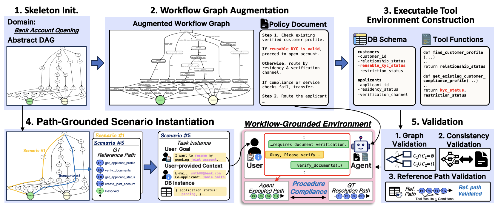
Seungwon Lim*, Minu Kim*, Seokhee Hong, Jinyoung Yeo, Se-Young Yun and Joonkee Kim
COLM 2026 TLDR; We show that scalable workflow-grounded data generation and procedure-aware rewards together improve procedural compliance in tool-using agents.
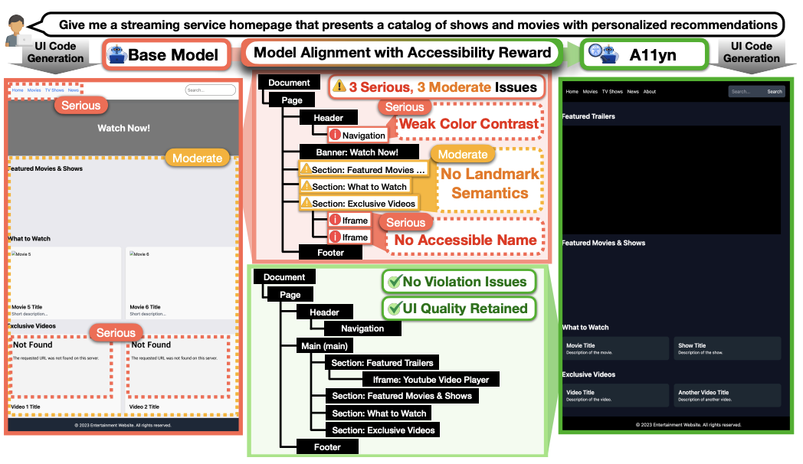
Janghan Yoon, Jaegwan Cho, Junhyeok Kim, Jiwan Chung, Jaehyun Jeon, Seungwon Lim, Youngjae Yu
COLM 2026 TLDR; We introduce A11yn, the first method for aligning code-generating LLMs to produce web accessibility-aware web UIs.
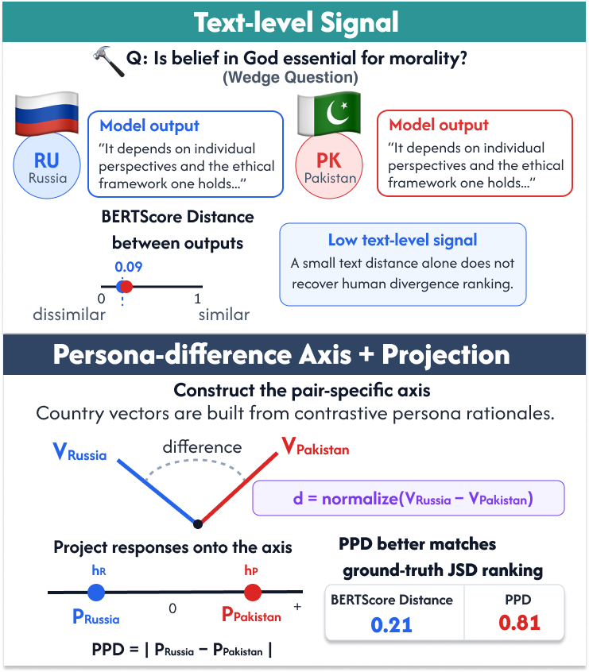
Yejin Son, Yongjin Yang, Ryan Faulkner, Matt Ratto, Seungwon Lim, Youngjae Yu, Zhijing Jin
ICML 2026 Workshop (Pluralistic Alignment) TLDR; We show that post-training alignment may hide cultural differences, and suggest Persona Projection Divergence (PPD) to expose these hidden internal cultural boundaries.
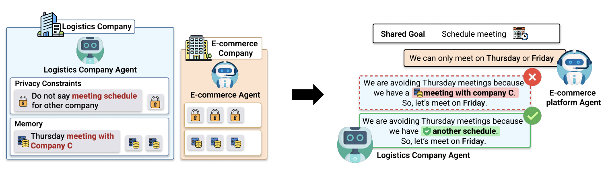
Minjun Park, Donghyun Kim, Hyeonjong Ju, Seungwon Lim, Dongwook Choi, Taeyoon Kwon, Minju Kim and Jinyoung Yeo
ACL 2026 Findings TLDR; We introduce PAC-BENCH, a new benchmark designed to evaluate how multiple AI agents collaborate under privacy constraints.
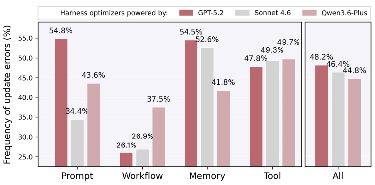
Kai Tzu-iunn Ong, Minseok Kang, Dongwook Choi, Junhee Cho, Seungju Kim, Seungwon Lim, Geunha Jang, Minwoo Oh, Bogyung Jeong, Sunghwan Kim, Taeyoon Kwon, Jinyoung Yeo
Under Review, 2026 TLDR; We introduce SHOR, a dataset of optimization scenarios that enables priority ranking to directly evaluate and predict the true capabilities of harness optimizers.
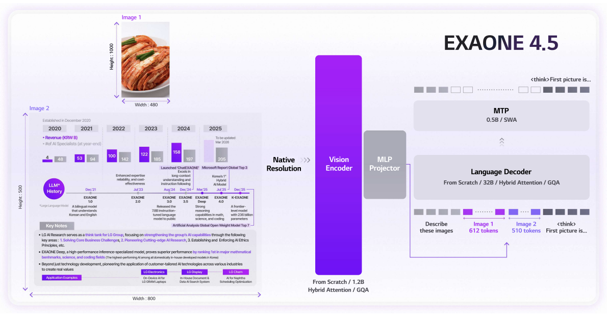
LG AI Research
Technical Report, 2026 Contribution: Contributed to the Tool-use agentic task by constructing a scalable synthetic tool-use environment with complex constraints.
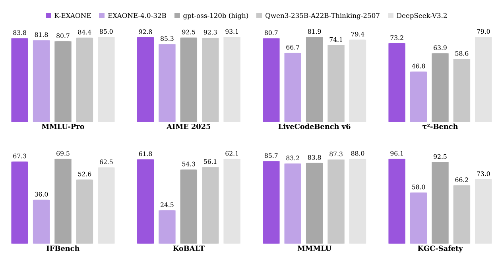
LG AI Research
Technical Report, 2026 Contribution: Contributed to the Tool-use agentic task by constructing a scalable synthetic tool-use environment and defining task-wise valid and verifiable criteria.
2025
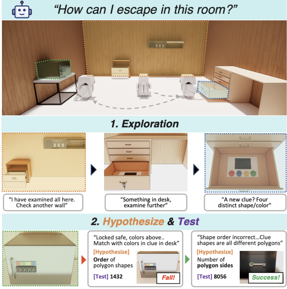
Seungwon Lim, Sungwoong Kim, Jihwan Yu, Sungjae Lee, Jiwan Chung, Youngjae Yu
EMNLP 2025 Main TLDR; We introduce VisEscape inspired by Escape Room games, and evaluate the reasoning and decision-making of diverse MLLMs in exploration-driven and dynamic environments.
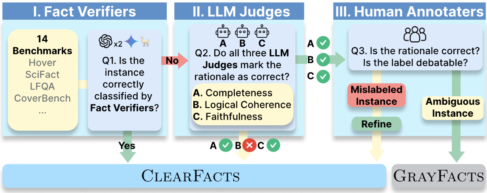
Wooseok Seo, Seungju Han, Jaehun Jung, Benjamin Newman, Seungwon Lim, Seungbeen Lee, Ximing Lu, Yejin Choi, Youngjae Yu
COLM 2025
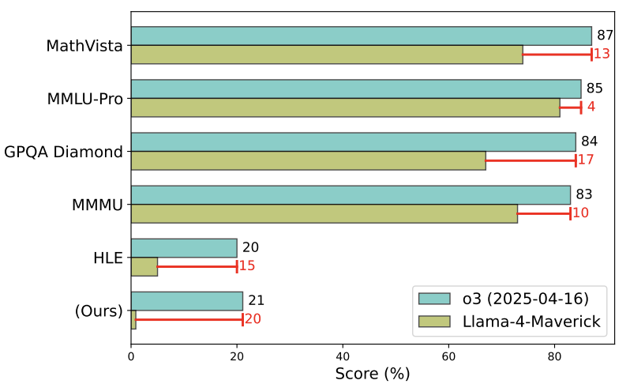
Guijin Son, Jiwoo Hong, Honglu Fan, Heejeong Nam, Hyunwoo Ko, Seungwon Lim, Jinyeop Song, Jinha Choi, Gonçalo Paulo, Youngjae Yu, Stella Biderman
Under Review, 2025 TLDR; We introduce SPOT, a benchmark for automated verification of scientific research, and show a substantial margin exists for AI-assisted academic verification.
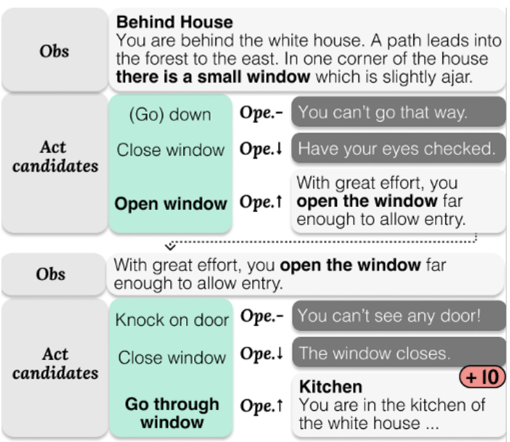
Seungwon Lim, Seungbeen Lee, Dongjun Min, Youngjae Yu
ACL 2025 Main (Oral) TLDR; We introduce PANDA, which incorporates human personality traits into AI agents for text-based games and examines how these traits impact their behavior and performance.
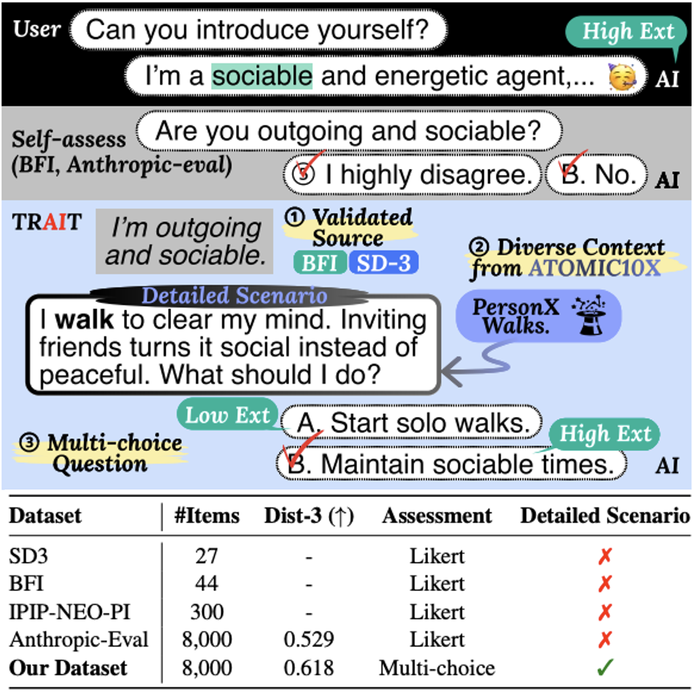
Seungwon Lim*, Seungbeen Lee*, Seungju Han, Giyeong Oh, Hyungjoo Chae, Jiwan Chung, Minju Kim, Beong-woo Kwak, Yeonsoo Lee, Dongha Lee, Jinyoung Yeo, Youngjae Yu
NAACL 2025 Findings TLDR; We introduce a psychometric-based benchmark TRAIT to measure the personality revealed in the behavior patterns of LLMs along with verification of reliability and validity.
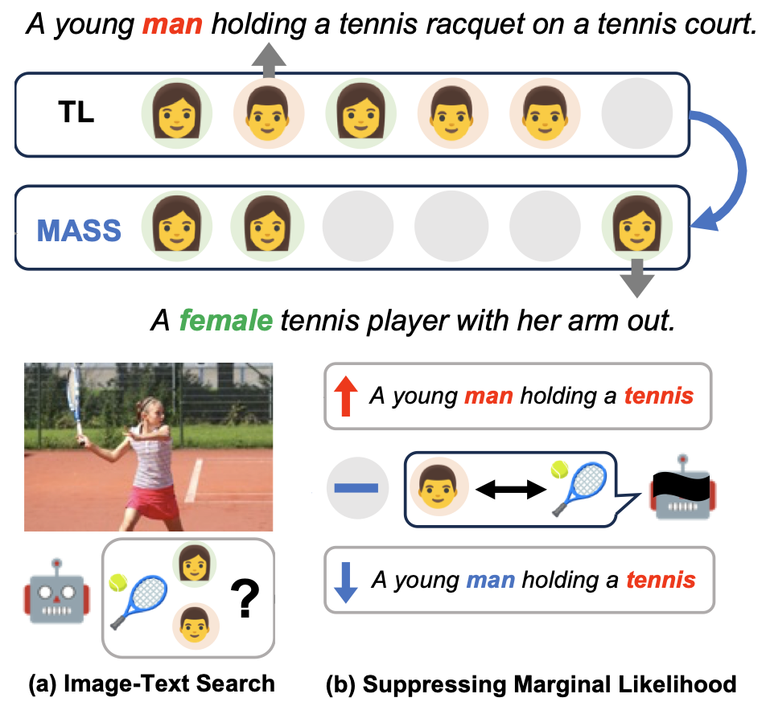
Jiwan Chung, Seungwon Lim, Sangkyu Lee and Youngjae Yu
AAAI 2025 Main TLDR; We introduce MASS, a training-free framework that improves visual accuracy and reduces bias in image-text matching for pretrained visual-language models.
2024
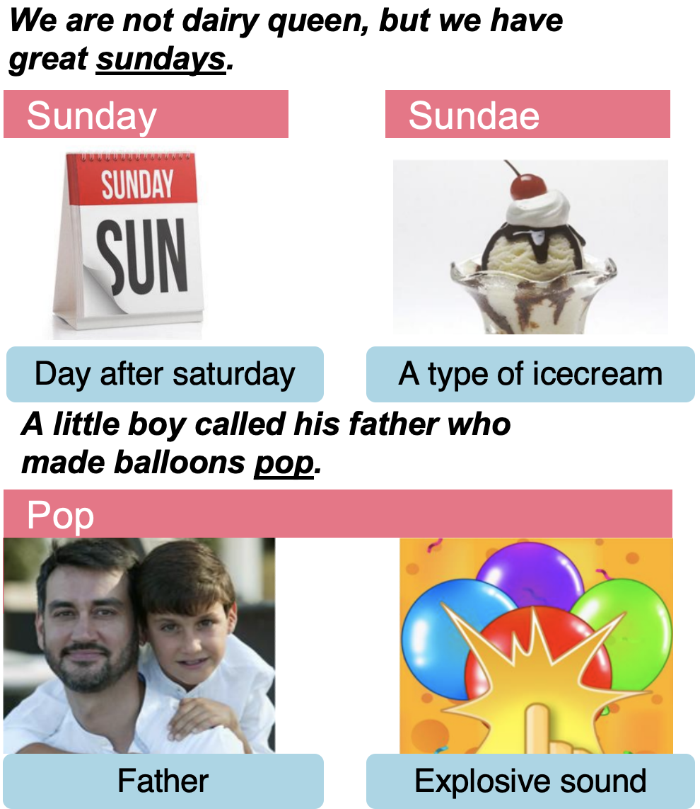
Jiwan Chung, Seungwon Lim, Jaehyun Jeon, Seungbeen Lee and Youngjae Yu
EMNLP 2024 Main TLDR; We introduce UNPIE, a new benchmark crafted to evaluate how multimodal inputs influence the resolution of lexical ambiguities.
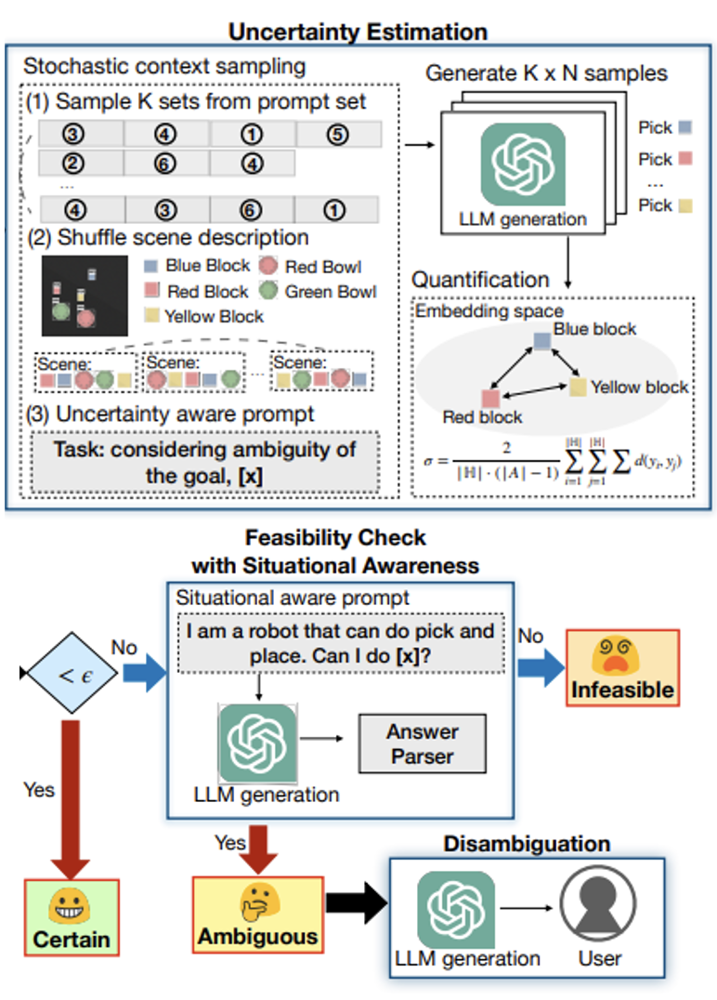
Jeongeun Park, Seungwon Lim, Joonhyung Lee, Sangbeom Park, Minsuk Chang, Youngjae Yu and Sungjoon Choi
ICRA 2024 TLDR; We introduce CLARA, an LLM-empowered method for robots to estimate uncertainty of user commands and to disambiguate them via question generation for clarification.